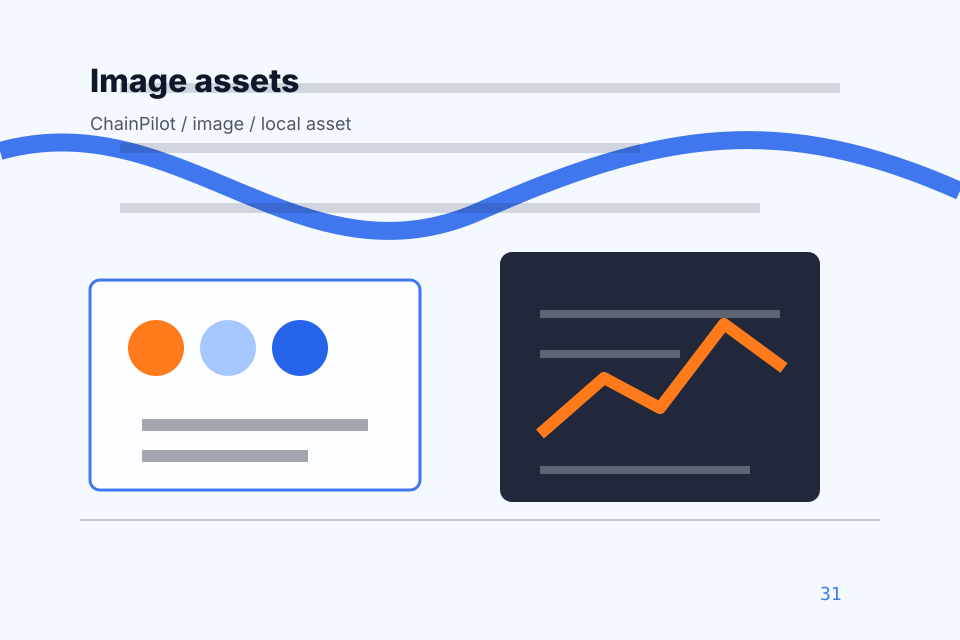

<!-- Source partial: Shipment dashboard hero. -->
<section id="section-hero" class="section hero-section hero-shipment-dashboard-hero composition-shipment-dashboard-hero" data-section="Hero" data-composition="Shipment dashboard hero" data-hero-type="Shipment dashboard hero" data-track="section_home_hero">
  <div class="container hero-grid">
    <div class="hero-copy">
      <p class="eyebrow">Home / 01</p>
      <h1>ChainPilot</h1>
      <h2>A freight-command site with shipment dashboards, network maps, quote modules, and status proof</h2>
      <p class="lead">ChainPilot brings networked delivery control guidance to the opening route, with practical context for logistics, delivery &amp; supply chain decisions and a clear route to the next step.</p>
      <p>ChainPilot connects the opening route with practical proof, useful comparisons, and the questions logistics, delivery &amp; supply chain visitors bring to the page. Visitors can scan the essentials, understand the tradeoffs, and decide whether to request a quote or keep exploring. The rhythm is built for action without removing the context people need to trust the decision.</p>
      <div class="button-row">
        <a class="button primary" href="../contact.html" data-track="cta_home_hero">Request Quote</a>
        <a class="button secondary" href="https://ash-tra.com/discovery/" data-track="secondary_home_hero">Discuss build</a>
      </div>
      
      <div class="hero-proof" aria-label="Trust notes">
        <span>System map</span><span>Evidence trail</span><span>Support route</span>
      </div>
<div class="container signature-panel signature-tracking" data-signature="tracking" data-page="home" data-section-key="hero">
    <div>
      <p class="eyebrow">Shipment dashboard hero</p>
      <h3>Track the movement</h3>
      <p>Select a path and ChainPilot keeps the next step, proof, and follow-up expectation aligned with visibility and delivery control.</p>
    </div>
    <div class="signature-controls" role="group" aria-label="Tracking mockup, quote calculator, network map filter">
      <button type="button" data-option="map" aria-pressed="true">Map</button><button type="button" data-option="filter" aria-pressed="false">Filter</button><button type="button" data-option="validate" aria-pressed="false">Validate</button>
    </div>
    <output data-signature-output aria-live="polite">Map route selected for ChainPilot.</output>
  </div>
    </div>
    <figure class="hero-media target-media target-kind-freight target-profile-flexport">
      <div class="target-stage target-freight target-profile-flexport" aria-hidden="true">
  <div class="network-map"><span style="--x:12%;--y:18%"></span><span style="--x:35%;--y:49%"></span><span style="--x:58%;--y:80%"></span><span style="--x:81%;--y:47%"></span><span style="--x:28%;--y:78%"></span><span style="--x:51%;--y:45%"></span><span style="--x:74%;--y:76%"></span><span style="--x:21%;--y:43%"></span><span style="--x:44%;--y:74%"></span><svg viewBox="0 0 100 60" preserveAspectRatio="none"><path d="M8 45 C25 12 44 48 60 20 S82 18 94 8"/></svg></div>
  <ul class="target-rowset"><li><b>Challenge</b><span>Live</span></li><li><b>Visibility</b><span>Ready</span></li><li><b>Promise</b><span>Clear</span></li></ul>
</div>
      <picture>
        <source media="(max-width: 640px)" srcset="../assets/images/hero/logistics-home-hero-mobile.svg">
        <source media="(max-width: 1024px)" srcset="../assets/images/hero/logistics-home-hero-tablet.svg">
        
      </picture>
      <figcaption>Ports, shipment dashboards, containers, trade lanes expressed through a custom static visual system.</figcaption>
    </figure>
  </div>
</section>
